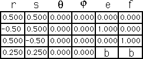
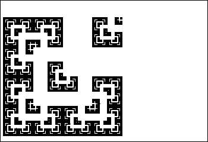

IFS Animations
Here we move the upper right corner from a translation of
b = 0.75
to
b = 0.25
in steps of
1/16 = 0.625
.
Note how the reflection of the lower right and upper left pieces affects the motion within those pieces.

